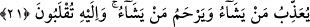

son yaratılışın inşâsı üzerine henüz vâki olmamış olmasından dolayıdır. Çünkü fikir ve
düşünce delil üzerinde cereyan eder, yoksa netice hakkında olmaz. (Yâni sonuç sadece
görülür; düşünce ise buna götüren delil üzerinde olur.)
Âyetin mânâsı: Sonra Allah Teâlâ, son yaratılışı yaratır; ikinci hayatı ihyâ eder,
diriltir. Yâni şu gördüğünüz ilk yaratılıştan (ibdâ) sonra âhiret hayatını yaratır. Çünkü
ibdâ ve iâde, iki farklı inşâ çeşididir ve her biri yokluktan varlığa çıkarma ve îcâd etme
husûsiyeti taşırlar.
Sonra Allah kıyamet gününde yeniden yaratarak bu halkı diriltir ve aşikâr eder. Sözün
özü şudur: Başlangıçta her şeyin yaratıcısının Allah olduğunu gördünüz ve bildiniz.
Öyle ise bu durum Hak Teâlâ’nın mahlûkâtı yeniden diriltebileceğine apaçık bir
delildir.
“Gerçekten Allah her şeye kâdirdir.” Çünkü kudreti zâtındandır. Bundan dolayı
kudretinin bütün mümkün varlıklara nisbeti eşittir; ilk yaratılışa kâdir olduğu gibi aynı
şekilde son yaratılışa, inşâya da kâdirdir.
21. O, dilediğine azâb eder, dilediğini esirger. Ancak O’na döndürüleceksiniz.
“O, dilediğine azâb eder” ki onlar inkârcılardır; dilediğini esirger,” merhamet eder
ki onlar da âhireti tasdik eden müminlerdir.
Âyette “azâb”ın “esirgeme”den önce zikredilmesi, makamın teşvikten (terğib) ziyade
korkutmaya (terhib) daha uygun bir yer olmasından dolayıdır.
“Ancak O’na döndürüleceksiniz.” Yani, öldükten sonra diriltilerek O’na
döndürüleceksiniz. O size amellerinizin karşılığı olarak azâbla veya rahmetle dilediği
şekilde muâmele edecektir.
Kâşîfî der ki: Keşfü’l-esrâr’da şöyle yazılıdır: Allah’ın azâbı, adâleti yüzündendir;
rahmeti ise fazl ve keremindendir. Kimi dilerse ona adâletiyle muamele eder ve
huzurundan sürer. Kime de fazl ve kerem gösterirse, lütfuyla çağırır.
Eğer huzurundan sürersen, adlin yüzünden sürersin
Katına çağıracak olursan, fazlınla çağırırsın
Benim sürmek ve çağırmakla ne işim olabilir?
Çağırsan da, sürsen de senin bileceğin iştir
Zâdü’l-mesîr’de şöyle rivayet edilir: Azap, kötü ve çirkin huy sebebiyle, rahmet ise
güzel ahlâk sebebiyledir. Bazılarına göre de dünyaya meyil azap ve onu terk etmek
rahmet; hırs azap, kanâat rahmet; bid’ata uymak azap, sünnete tabi olmak rahmet; gönül
perişanlığı azap, kalbin dirliği ve topluluğu rahmettir.
İmam Kuşeyrî şöyle buyurmuştur: Azap, Allah’ın kulu kendisine terk etmesi, onu